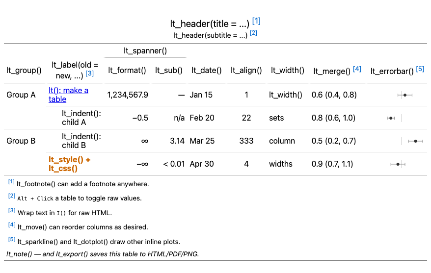

1 The cheat sheet (table)
The table below is a self-documenting cheat sheet: many functions in this
package are used to build it, and each function’s name is placed where
that function acts. The title reads lt_header(title = ...) because
lt_header() put it there; every column header is the name of the function
that shaped that column; the row-group label is lt_group(); the footnote text
is lt_footnote(); and so on.
d = data.frame(
Grp = paste("Group", c("A", "A", "B", "B")),
Label = c("<a href='#sec:cheatsheet'>lt(): make a table</a>",
"lt_indent(): child A",
"lt_indent(): child B", "lt_style() + lt_css()"),
Fmt = c(1234567.89, -0.51234, Inf, -Inf),
Sub = c(0, NA, 3.14, 0.0002),
Date = as.Date(c("2024-01-15", "2024-02-20", "2024-03-25", "2024-04-30")),
Align = c(1, 22, 333, 4),
Width = c("lt_width()", "sets", "column", "widths"),
Est = c("0.6", "0.8", "0.5", "0.9"),
CI = c("(0.4, 0.8)", "(0.6, 1.0)", "(0.2, 0.7)", "(0.7, 1.1)"),
Eff = c(0.1, -0.3, 0.4, -0.1),
EffLo = c(-0.1, -0.4, 0.2, -0.3),
EffHi = c(0.3, -0.2, 0.6, 0.1)
)
library(lt)
tbl_cheat = lt(d, auto_format = FALSE) |>
# lt_group(): the "lt_group()" row-group header on the left
lt_group(~ Grp) |>
# lt_header(): the title and subtitle at the top
lt_header(
title = "lt_header(title = ...)",
subtitle = "lt_header(subtitle = ...)"
) |>
# lt_merge(): fold CI into Est to make the "lt_merge()" column
lt_merge(~ Est + CI, pattern = "{1} {2}") |>
# lt_spanner(): the "lt_spanner()" label above two columns
lt_spanner(`lt_spanner()` ~ Fmt + Sub) |>
# lt_label(): every column header is renamed to the function acting on it
lt_label(
Grp = "lt_group()", Width = "lt_width()", Label = "lt_label(old = new, ...)",
Fmt = "lt_format()", Sub = "lt_sub()", Date = "lt_date()",
Align = "lt_align()", Est = "lt_merge()", Eff = "lt_errorbar()"
) |>
# lt_errorbar(): draw an inline forest plot in the "lt_errorbar()" column
lt_errorbar(Eff ~ EffLo + EffHi, ref = 0, width = 80) |>
# lt_html(): render the "Label" column as raw HTML (note the link in row 1)
lt_html(~ Label) |>
# lt_align(): center the "lt_align()" column
lt_align(~ Align, "center") |>
# lt_width(): the "lt_width()" column is where widths are set
lt_width(Width = "9em", Label = "16em") |>
# lt_format(): round and add a thousands separator
lt_format(~ Fmt, decimals = 1, big_mark = ",") |>
# lt_date(): format the "lt_date()" column
lt_date(~ Date, options = list(
month = "short", day = "numeric", timeZone = "UTC"
)) |>
# lt_sub(): NA/zero/small are replaced with self-naming placeholders
lt_sub(~ Sub, missing = "n/a", zero = "—",
small = 0.01, small_text = "< 0.01") |>
# lt_indent(): indent the two "lt_indent()" child rows
lt_indent(c(2, 3), level = 1) |>
# lt_style() + lt_css(): style the cell that names them
lt_style("Label", rows = 4L, class = "highlight") |>
lt_css(.highlight = list(fontWeight = "bold", color = "#c60")) |>
# lt_footnote(): provide the footnote text
lt_footnote("lt_footnote() can add a footnote anywhere.", "title") |>
lt_footnote(I("<code>Alt + Click</code> a table to toggle raw values."), "subtitle") |>
# I(): wrapping text in I() marks it as raw HTML (here, a bold tag)
lt_footnote(I("Wrap text in <code>I()</code> for raw HTML."), "column", "Label") |>
# lt_move(): explain it via a footnote, since it has no column of its own here
lt_footnote("lt_move() can reorder columns as desired.", "column", "Est") |>
# lt_errorbar(): point to the other inline plot types via a footnote
lt_footnote("lt_sparkline() and lt_dotplot() draw other inline plots.",
"column", "Eff") |>
# lt_note(): the footer note names itself and lt_export()
lt_note("lt_note() — and lt_export() saves this table to HTML/PDF/PNG.")
tbl_cheat |> lt_wrap(class = "fullwidth")
2 Basics
2.1 A simple table
Pass any data frame to lt():
tbl_cars = lt(head(mtcars))
tbl_cars
2.2 Column labels
By default, column names are cleaned for display by replacing . and
_ with spaces. Use auto_label = FALSE to show raw names, or
lt_label() to override specific columns:
tbl_iris = lt(head(iris))
tbl_iris
lt(head(iris), auto_label = FALSE)
tbl_iris |> lt_label(Sepal.Length = "Length (cm)", Sepal.Width = "Width (cm)")
2.3 Title and subtitle
tbl_iris |>
lt_header(title = "Iris Measurements", subtitle = "First six observations")
2.4 Column alignment
By default, numeric columns are right-aligned and character columns are
left-aligned. Override with lt_align():
tbl_cars |> lt_align(~ mpg + cyl, "center") |> lt_width(mpg = "6em")
3 Formatting
3.1 Auto-formatting
By default, lt() automatically formats numeric columns: rounding to
~4 significant digits (adapting decimal places to magnitude), adding a
thin-space thousands separator, using a typographic minus (U+2212) for
negatives, detecting percentage columns (names containing %, _pct,
or _percent) and multiplying by 100 with a % suffix, and skipping
year-like columns. Set auto_format = FALSE to display raw values:
d = data.frame(
Year = c(2020, 2021, 2022),
Revenue = c(1234567.89, 2345678.12, -3456.789),
Margin_pct = c(0.1234, 0.0567, 0.2345)
)
lt(d)
lt(d, auto_format = FALSE)
3.2 Number formatting
tbl_cars |> lt_format(~ mpg + disp, decimals = 1)
3.2.1 Decimal places
Control the number of decimal places with decimals:
d = data.frame(
Metric = c("Revenue", "Costs", "Profit"),
Q1 = c(1234567.891, 987654.321, 246913.570),
Q2 = c(1345678.912, 1012345.678, 333333.234)
)
lt(d) |>
lt_format(~ Q1 + Q2, decimals = 2)
3.2.2 Significant digits
Instead of fixing the number of decimal places, use sig_digits to keep a
fixed number of significant digits. This is handy when a column spans several
orders of magnitude, since small and large values each retain the same number
of meaningful digits:
d3 = data.frame(
Particle = c("Electron", "Proton", "Alpha"),
Mass = c(0.00054858, 1.00727647, 4.00150618)
)
lt(d3) |> lt_format(~ Mass, sig_digits = 3)
sig_digits cannot be combined with decimals.
3.2.3 Big mark (thousands separator)
lt(d) |>
lt_format(~ Q1 + Q2, decimals = 0, big_mark = ",")
3.2.4 Prefix and suffix (currency, units)
Use prefix and suffix to prepend or append symbols to formatted values:
lt(d) |>
lt_format(~ Q1 + Q2, decimals = 2, big_mark = ",", prefix = "$")
d2 = data.frame(
Material = c("Steel", "Aluminum", "Copper"),
Weight = c(1250, 340.5, 89.12)
)
lt(d2) |> lt_format(~ Weight, decimals = 1, suffix = " kg")
3.3 Date formatting
Format Date or POSIXt columns using JavaScript’s native Date methods.
The default uses toLocaleDateString().
Note: The formatted date may differ from the input depending on the
viewer’s timezone. new Date("2024-01-15") is parsed as UTC midnight,
but toLocaleDateString() converts to local time — so 2024-01-15
displays as 2024-01-14 at GMT-6. Pass options = list(timeZone = "UTC") to avoid this.
d = data.frame(
Event = c("Launch", "Update", "Release"),
Date = as.Date(c("2024-01-15", "2024-06-30", "2024-12-01"))
)
lt(d) |> lt_date(~ Date)
3.3.1 With locale and options
Pass locale and options for Intl.DateTimeFormat control:
lt(d) |> lt_date(~ Date, locale = "zh-CN",
options = list(year = "numeric", month = "long", day = "numeric",
weekday = "long", timeZone = "UTC"))
3.3.2 Using a specific Date method
lt(d) |> lt_date(~ Date, method = "toDateString")
3.3.3 Datetime (POSIXt) columns
For datetime values, include time components in options:
d = data.frame(
Event = c("Start", "End"),
Time = as.POSIXct(c("2024-01-15 09:30:00", "2024-01-15 17:45:00"), tz = "UTC")
)
lt(d) |> lt_date(~ Time, locale = "en-US", options = list(
year = "numeric", month = "short", day = "numeric",
hour = "2-digit", minute = "2-digit"
))
3.4 Substituting missing/small values
d = data.frame(
Metric = c("HR", "p-value", "Events", "Rate"),
Value = c(0.62, 0.0003, 0, NA)
)
lt(d) |>
lt_format(~ Value, decimals = 2) |>
lt_sub(~ Value, missing = "n/a", zero = "—", small = 0.001, small_text = "< 0.001")
3.5 Infinity values
Inf and -Inf render as ∞ and −∞. Auto-formatting uses a typographic minus
(U+2212) for −∞; raw (unformatted) columns use an ASCII hyphen:
d = data.frame(
Metric = c("Lower bound", "Upper bound", "Rate", "Missing"),
Value = c(-Inf, Inf, 1.5, NA)
)
lt(d) |> lt_format(~ Value, decimals = 2)
4 Footnotes and notes
4.1 Footnotes
A footnote can be attached to any of six locations via the where
argument: the title, the subtitle, a column label, a spanner
label, a row group label, or one or more body cells. The example
below shows all six at once:
d = data.frame(
Arm = c("Treatment", "Treatment", "Control", "Control"),
Stat = c("n", "Mean", "n", "Mean"),
Value = c(31, 6.8, 30, 4.2),
SE = c(NA, 0.42, NA, 0.38)
)
lt(d) |>
lt_group(~ Arm) |>
lt_header(title = "Study Results", subtitle = "Two arms") |>
lt_spanner(`Summary` ~ Value + SE) |>
# title and subtitle
lt_footnote("Source: simulated trial data.", "title") |>
lt_footnote("Intention-to-treat population.", "subtitle") |>
# a column label
lt_footnote("Standard error of the mean.", "column", "SE") |>
# a spanner label
lt_footnote("Per-arm summary statistics.", "spanner", "Summary") |>
# a row-group label
lt_footnote("Received active drug.", "group", "Treatment") |>
# specific body cells (column + rows)
lt_footnote("SE undefined for counts.", "body", "SE", rows = c(1, 3))
4.2 Notes
Notes appear in the footer below numbered footnotes:
tbl_cars |> lt_note("Data from the 1974 Motor Trend US magazine.")
5 Row groups
5.1 Group by column
Pass a column name to lt_group() to partition rows by that column’s
values. The column is removed from the body and its values become group
headers:
d = data.frame(
Region = c("East", "East", "West", "West", "West"),
City = c("New York", "Boston", "Seattle", "Portland", "Denver"),
Population = c(8336817, 675647, 737015, 652503, 715522)
)
lt(d) |>
lt_group(~ Region) |>
lt_header(title = "US Cities by Region") |>
lt_format(~ Population, big_mark = ",")
5.2 Auto separator rows for long labels
By default (sep = 'auto'), lt_group() switches from rowspan cells to
full-width separator rows when any group label exceeds 20 characters:
d = data.frame(
Department = c(
"Cardiovascular Research", "Cardiovascular Research",
"Biostatistics", "Biostatistics"
),
Trial = c("ATLAS-2", "BEACON", "PRIME-1", "NEXUS"),
N = c(450, 320, 280, 510)
)
# "Cardiovascular Research" (23 chars) triggers separator mode automatically
lt(d) |> lt_group(~ Department)
# force rowspan mode with sep = FALSE
lt(d) |> lt_group(~ Department, sep = FALSE)
5.3 Group by multiple columns (rowspan)
Pass multiple columns to lt_group() to render hierarchical rowspan
cells on the left side of the table:
d = data.frame(
Region = c("East", "East", "East", "West", "West", "West"),
State = c("NY", "NY", "MA", "WA", "WA", "OR"),
City = c("New York", "Buffalo", "Boston", "Seattle", "Spokane", "Portland"),
Population = c(8336817, 278349, 675647, 737015, 228989, 652503)
)
lt(d) |>
lt_group(~ Region + State) |>
lt_header(title = "Cities by Region and State") |>
lt_format(~ Population, big_mark = ",")
5.4 Separator-row style
Use sep = TRUE to render groups as full-width separator rows instead of
rowspan cells:
d = data.frame(
Region = c("East", "East", "West", "West", "West"),
City = c("New York", "Boston", "Seattle", "Portland", "Denver"),
Population = c(8336817, 675647, 737015, 652503, 715522)
)
lt(d) |>
lt_group(~ Region, sep = TRUE) |>
lt_header(title = "US Cities by Region") |>
lt_format(~ Population, big_mark = ",")
5.5 Manual row groups
Use named arguments in lt_group() for explicit control over which rows
belong to each group:
tbl_cars |> lt_group("First three" = 1:3, "Last three" = 4:6)
5.6 Row group ordering
d = data.frame(
arm = c("Placebo", "Placebo", "Treatment", "Treatment"),
stat = c("n", "Mean", "n", "Mean"),
value = c("30", "4.2", "31", "6.8")
)
lt(d) |>
lt_group(~ arm, sep = TRUE) |>
lt_group("Treatment", "Placebo")
5.7 Row indentation
Indent the first column to show hierarchy:
d = data.frame(
label = c("Any AE", "SOC: Cardiac", "Tachycardia", "Bradycardia",
"SOC: GI", "Nausea"),
n_pct = c("45 (67%)", "30 (45%)", "15 (22%)", "18 (27%)", "20 (30%)", "12 (18%)")
)
lt(d) |>
lt_header("Adverse Events", "Safety Population") |>
lt_indent(c(2, 5), level = 1) |>
lt_indent(c(3, 4, 6), level = 2)
6 Column structure
6.1 Column spanners
A spanner groups contiguous columns under a shared label:
tbl_iris |>
lt_spanner(Sepal ~ Sepal.Length + Sepal.Width) |>
lt_spanner(Petal ~ Petal.Length + Petal.Width)
6.1.1 Auto-inferred spanners
When column names share a common prefix separated by . or _, call
lt_spanner() with no arguments to infer spanners automatically:
tbl_iris |> lt_spanner()
6.1.2 Spanner with formatting
tbl_iris |>
lt_header(title = "Iris Dataset") |>
lt_spanner(Sepal ~ Sepal.Length + Sepal.Width) |>
lt_spanner(Petal ~ Petal.Length + Petal.Width) |>
lt_format(~ Sepal.Length + Sepal.Width + Petal.Length + Petal.Width, decimals = 1)
6.2 Column merging
Combine columns into one using a pattern. Source columns are hidden automatically:
d = data.frame(
stat = c("Age", "Weight", "Height"),
n = c(67, 65, 64),
pct = c(100, 97.0, 95.5)
)
lt(d) |>
lt_format(~ pct, decimals = 1) |>
lt_merge(~ n + pct, pattern = "{1} ({2}%)") |>
lt_label(n = "n (%)")
6.2.1 Conditional merge with << >>
Wrap pattern sections in << and >> to drop them when any referenced
column is empty/NA:
d = data.frame(
endpoint = c("Primary", "Secondary", "Tertiary"),
est = c(0.61, 0.79, 0.45),
ci_lo = c(0.40, 0.57, NA),
ci_hi = c(0.82, 1.01, NA)
)
lt(d) |>
lt_format(~ est + ci_lo + ci_hi, decimals = 2) |>
lt_merge(~ est + ci_lo + ci_hi, pattern = "{1}<< ({2}, {3})>>") |>
lt_label(est = "Estimate (95% CI)")
6.3 Column widths
tbl_cars |> lt_width(mpg = "8em", cyl = "5em", disp = "8em", hp = "6em")
6.4 Table width
Pass a single unnamed argument to lt_width() to set the width of the
whole table. It can be combined with named column widths:
tbl_iris |> lt_width("80%")
tbl_iris |> lt_width("100%", Species = "20em")
6.5 Column reordering
tbl_iris |> lt_move(~ Petal.Length + Petal.Width, after = NULL)
6.6 Hiding columns
lt_hide() drops columns from the table without dropping their data: the
values still travel in the spec, so they stay available to anything that
reads the whole row (e.g. an interactive table’s row detail, below).
tbl_iris |> lt_hide(~ Petal.Length + Petal.Width)
7 Inline plots
These functions draw a tiny chart into a column’s cells. All are lightweight: only the numbers travel to the browser and the SVG is drawn there, so for an interactive table only the current page’s rows are drawn.
7.1 Error bars
lt_errorbar() renders a numeric column’s cells as a small inline SVG — a
point at the estimate with a horizontal bar (and end caps) from the lower to
the upper bound — all drawn on a scale shared across the column, so rows are
comparable at a glance (a forest plot of effect sizes with confidence
intervals). Name the three columns with a two-sided formula
value ~ lower + upper or a vector c(value, lower, upper); the bound
columns are hidden by default (hide = FALSE keeps them). Pass ref to draw
a vertical reference line (e.g. 0 for a risk difference). Set axis = TRUE
(or a string caption) to add a shared axis in the footer — a baseline with
tick marks and labels at “nice” round values, matching faint gridlines inside
each cell.
d_eff = data.frame(
Term = c("Age", "Dose", "Baseline", "Sex"),
Est = c(0.12, -0.34, 0.45, -0.08),
Lo = c(-0.05, -0.52, 0.21, -0.29),
Hi = c(0.29, -0.16, 0.69, 0.13)
)
lt(d_eff) |>
lt_errorbar(Est ~ Lo + Hi, ref = 0, axis = "Effect (95% CI)")
By default the plot is drawn into the first value column’s cells. Pass into
to draw it into a dedicated column instead, so every value column stays visible
as text alongside the plot. The named column is created when it does not exist;
use lt_move() to place it.
lt(d_eff) |>
lt_errorbar(Est ~ Lo + Hi, ref = 0, into = "Forest", hide = FALSE,
axis = "Effect (95% CI)")
Several series can share one cell: pass one value ~ lower + upper per series
and each row stacks one point-and-bar on the same scale (e.g. a risk difference
for each of several treatment arms). color and labels key the series in a
footer legend, as for lt_dotplot().
d_grp = data.frame(
Term = c("Headache", "Nausea", "Fatigue"),
D1 = c(2.1, -1.4, 3.3), L1 = c(-1.0, -4.2, 0.1), U1 = c(5.2, 1.4, 6.5),
D2 = c(-0.5, 0.8, 1.2), L2 = c(-3.6, -2.1, -1.9), U2 = c(2.6, 3.7, 4.3)
)
lt(d_grp) |>
lt_errorbar(
D1 ~ L1 + U1, D2 ~ L2 + U2, ref = 0, color = TRUE,
labels = c("Drug A", "Drug B"), axis = "Risk difference (%)"
)
7.2 Sparklines
lt_sparkline() draws a per-row series as a small line or bar chart. The
series can be a single list-column (each cell a numeric vector) or several
numeric columns read across the row (~ a + b + c, all but the first hidden by
default). Each row is scaled to its own range unless limits sets a shared
scale; type = "bar" draws bars instead of a line.
d_spark = data.frame(City = c("Oslo", "Cairo", "Lima"))
# a list-column: each cell is a vector of monthly values
d_spark$Temp = list(
c(-3, -2, 1, 6, 12, 16), c(14, 15, 18, 23, 28, 31), c(19, 19, 18, 16, 15, 15)
)
d_spark$Rain = list(
c(49, 36, 47, 41, 53, 60), c(5, 4, 4, 1, 0, 0), c(8, 4, 2, 1, 1, 1)
)
lt(d_spark) |>
lt_sparkline(~ Temp) |>
lt_sparkline(~ Rain, type = "bar", color = "#4caf50")
7.3 Dot plots
lt_dotplot() draws one dot per column on a scale shared across them, so a row
with N columns shows N dots laid out by value — handy for comparing a few
measurements per row (e.g. before vs. after). Name the value columns with
~ a + b + c (all but the first hidden by default). color = TRUE colors the
dots from the palette and adds a footer legend; a vector of colors sets them
explicitly. A shared axis is drawn in the footer by default (axis = FALSE to
drop it, or a string for a caption).
d_dot = data.frame(
Group = c("Control", "Low", "High"),
Before = c(3.1, 3.4, 3.0), After = c(3.3, 4.1, 5.2)
)
lt(d_dot) |>
lt_dotplot(~ Before + After, color = TRUE, axis = "Score")
When two dots fall at nearly the same value they overlap; stagger = TRUE
spreads near-equal dots onto separate tracks so each stays visible.
lt(d_dot) |>
lt_dotplot(~ Before + After, color = TRUE, stagger = TRUE, axis = "Score")
8 Styling
8.1 Cell styling
Highlight specific cells with bold, color, background, or any CSS property (camelCase or dash-case):
d = data.frame(
Endpoint = c("Primary", "Secondary", "Exploratory"),
HR = c(0.62, 0.79, 0.91),
P = c(0.001, 0.042, 0.38)
)
lt(d) |>
lt_format(~ HR, decimals = 2) |>
lt_format(~ P, decimals = 3) |>
lt_style("P", rows = 1:2L, bold = TRUE, color = "#06c") |>
lt_style("HR", rows = 1L, bg = "#e8f4e8", borderBottom = "2px solid #4a4")
8.2 Conditional styling
Apply styles based on cell values using a JavaScript test function. Use
class to assign CSS classes, then define the rules with lt_css():
d = data.frame(
Endpoint = c("Primary", "Secondary", "Exploratory"),
HR = c(0.62, 0.79, 1.05),
P = c(0.001, 0.042, 0.38)
)
lt(d) |>
lt_format(~ HR + P, decimals = 3) |>
lt_style("HR", test = "v => v < 1", class = "good") |>
lt_style("P", test = "v => v < 0.05", class = "sig") |>
lt_css(.good = list(color = "green"), .sig = list(fontWeight = "bold"))
8.3 Highlighting NA cells
d = data.frame(
arm = c("Treatment", "Control", "Treatment"),
n = c(30, NA, 28),
response = c(0.67, NA, NA)
)
lt(d) |>
lt_style(test = "v => v == null", class = "na") |>
lt_css(.na = list(background = "#fee"))
8.4 Scoping styles to one table
lt_wrap() sets attributes on the table’s container (the .lt-wrap div). A
class is appended to the base class, which a stylesheet can target so its
rules apply to that table alone and not to every lt table on the page. Here
the container is tagged striped, and a rule keyed on .striped zebra-stripes
only this table.
lt(head(mtcars, 4)) |> lt_wrap(class = "striped")
.striped tbody tr:nth-child(even) td { background: #f2f6ff; }
8.5 HTML content
By default, every cell value and text label is HTML-escaped, so characters
like <, >, and & render as literal text. To emit raw HTML instead —
links, emphasis, images, and so on — use lt_html() to mark whole body
columns, and wrap any other text (titles, labels, footnotes, notes,
spanners) in I():
d = data.frame(
Package = c(
"<a href='https://cran.r-project.org/package=lt'>lt</a>",
"<a href='https://cran.r-project.org/package=xfun'>xfun</a>"
),
Status = c("<b style='color:#090'>stable</b>", "<i>active</i>")
)
lt(d) |>
lt_html(~ Package + Status) |>
lt_header(I("Packages <sup>★</sup>")) |>
lt_label(Package = I("Name<sup>*</sup>")) |>
lt_note(I("See <a href='https://yihui.org/'>the author</a>."))
9 Complete example
d = data.frame(
Group = c("Treatment", "Treatment", "Control", "Control"),
Endpoint = c("Primary", "Secondary", "Primary", "Secondary"),
Estimate = c(0.6123, 0.7891, 0.4567, 0.5432),
CI_Lower = c(0.4012, 0.5678, 0.2345, 0.3210),
CI_Upper = c(0.8234, 1.0104, 0.6789, 0.7654),
P_Value = c(0.0012, 0.0456, 0.1234, 0.2345)
)
lt(d) |>
lt_group(~ Group) |>
lt_header(
title = "Study Results",
subtitle = "Primary and secondary endpoints"
) |>
lt_spanner(`95% CI` ~ CI_Lower + CI_Upper) |>
lt_format(~ Estimate + CI_Lower + CI_Upper, decimals = 3) |>
lt_format(~ P_Value, decimals = 4) |>
lt_footnote("Two-sided p-value from log-rank test.", "column", "P_Value")
10 Exporting
lt_export() saves a table to a file. The format is chosen from the file
extension: .html, .pdf, or (otherwise) .png. PDF and PNG are rendered in
a headless Chromium browser.
lt_export(tbl_cheat, "01-lt.png", width = "min-content")
#> [1] "01-lt.png"

1 A table exported to PNG.
lt_export(tbl_cheat, "01-lt.pdf")
#> [1] "01-lt.pdf"
For .html output, the table can be baked into a static <table> (built once
by running the lt.js runtime, so the saved file needs no JavaScript to view).
Set tidy = TRUE to pretty-print it with line breaks and indentation:
tbl = lt(head(penguins))
lt_export(tbl, NA, fragment = TRUE, css = FALSE, tidy = TRUE)
<div class="lt-wrap">
<table class="lt-table">
<thead>
<tr>
<th scope="col">species</th>
<th scope="col">island</th>
<th scope="col" class="al-r">bill len</th>
<th scope="col" class="al-r">bill dep</th>
<th scope="col" class="al-r">flipper len</th>
<th scope="col" class="al-r">body mass</th>
<th scope="col">sex</th>
<th scope="col" class="al-r">year</th>
</tr>
</thead>
<tbody>
<tr>
<td>Adelie</td>
<td>Torgersen</td>
<td class="al-r">39.1</td>
<td class="al-r">18.7</td>
<td class="al-r">181</td>
<td class="al-r" title="3750">3 750</td>
<td>male</td>
<td class="al-r">2007</td>
</tr>
<tr>
<td>Adelie</td>
<td>Torgersen</td>
<td class="al-r">39.5</td>
<td class="al-r">17.4</td>
<td class="al-r">186</td>
<td class="al-r" title="3800">3 800</td>
<td>female</td>
<td class="al-r">2007</td>
</tr>
<tr>
<td>Adelie</td>
<td>Torgersen</td>
<td class="al-r">40.3</td>
<td class="al-r" title="18">18.0</td>
<td class="al-r">195</td>
<td class="al-r" title="3250">3 250</td>
<td>female</td>
<td class="al-r">2007</td>
</tr>
<tr>
<td>Adelie</td>
<td>Torgersen</td>
<td class="al-r" title="">—</td>
<td class="al-r" title="">—</td>
<td class="al-r" title="">—</td>
<td class="al-r" title="">—</td>
<td title="">—</td>
<td class="al-r">2007</td>
</tr>
<tr>
<td>Adelie</td>
<td>Torgersen</td>
<td class="al-r">36.7</td>
<td class="al-r">19.3</td>
<td class="al-r">193</td>
<td class="al-r" title="3450">3 450</td>
<td>female</td>
<td class="al-r">2007</td>
</tr>
<tr>
<td>Adelie</td>
<td>Torgersen</td>
<td class="al-r">39.3</td>
<td class="al-r">20.6</td>
<td class="al-r">190</td>
<td class="al-r" title="3650">3 650</td>
<td>male</td>
<td class="al-r">2007</td>
</tr>
</tbody>
</table>
</div>
11 Interactivity
11.1 Raw values
When cell values are formatted, the original values are available in
tooltips (hover over a cell to see). You can also Alt + Click on a
table to reveal all raw values at once, or Alt + Double-Click to
toggle raw values for all tables on the page.
11.2 Sorting, searching, filtering, and paging
lt_interactive() turns a table into an interactive one: click a column
header to sort by it (ascending, descending, then unsorted), type in the
search box above the table to keep only the rows that match, and walk
through the rows a page at a time with the pager below the table. Paging,
per-column filters (see below), and resizable columns are on by default;
the page sizes to offer are given as a vector, the first of which is used
initially, and Inf offers every row on one page.
d = mtcars[, c("mpg", "cyl", "hp", "wt", "gear")]
lt(d) |> lt_interactive(pager = c(5, 10, Inf), filter = FALSE)
Shift-click a second header to sort by it as a tie-breaker, so several
columns sort at once (an ordinal in each header marks its place). An
initial sort can be requested with sort as a one-sided formula (below);
a - prefix (a negated formula term) sorts a column descending.
lt(d) |> lt_interactive(sort = ~ cyl + -mpg, pager = 10, search = FALSE, filter = FALSE)
The extra controls (and the JavaScript that drives them) are only loaded
for tables that call lt_interactive(), so other tables cost nothing.
A search term is matched case-insensitively against the displayed text,
and does not contain merc keeps the rows that do not mention
Mercedes. A term that mentions x is instead evaluated as a
JavaScript expression against each raw cell value, so x > 20 keeps the
rows with a value above 20 in any column.
The box also reads plain language. A condition names a column (by its name
or its label, which may contain spaces), then an operator and a value, e.g.
mpg over 25. The operators are over, above, or more than (>);
under, below, or less than (<); at least (>=); at most (<=);
between 5 and 10; is or equals; is not; contains (or a bare
column value, such as cyl 6); and does not contain (also excludes;
the column name is optional, so alone it checks every column). Text compares ignore case. Conditions
combine with and, ,, or ; (all must hold), and or gives alternatives,
with and binding tighter, so cyl is 4 or cyl is 6, mpg over 20 means
cyl is 4 or (cyl is 6 and mpg over 20). Other words are searched as
typed, and a quoted phrase stays whole. A line under the box shows how the
query was read, and the placeholder and dropdown offer random example queries
built from the table’s own values. Click the box to see them, then pick one to
run it.
By default, each column gets a filter under its header (chosen from its
data, see "auto" below). filter = TRUE instead adds a plain box under
each column header, matching the same way as the search but against that
column alone; a row is kept when it passes every filter and the search.
Pass a character vector to filter on some columns only, or FALSE to
turn the filters off. A column’s box takes the same plain-language syntax as
the search without the column name, so over 20 or is red or is blue works
there, and it offers its own random examples.
lt(d) |> lt_interactive(filter = TRUE, search = FALSE, pager = 5)
A column can take a typed control instead of a plain box: pass a named
list where each column maps to "select" (a value dropdown), "range"
(a two-thumb slider), or "checklist" (a popover of checkboxes). The
dropdown’s and checklist’s choices and the slider’s ends are read from the
column’s data. The control renders as a funnel under the header, paired
with an expression box that stays in sync. One unnamed entry is the
default for every other column.
filter = "auto" chooses the control for each column from its data: a
range slider for numbers (a plain box when every value is the same), a
checklist for text with at most 10 distinct values, and a plain box for
anything else. It can also be the unnamed default in a list, so
list("auto", cyl = "select") overrides just cyl.
lt(iris) |> lt_interactive(filter = "auto", search = FALSE, pager = 5)
A column set to FALSE gets no filter at all, even under a default such as
"auto" or TRUE. Here Species is left out of the filters:
lt(iris) |> lt_interactive(filter = list("auto", Species = FALSE), search = FALSE, pager = 5)
A "select" keeps the one value chosen; a "checklist" keeps every value
whose box is checked (all checked is the no-filter state), so the reader
can keep several at once.
A "range" slider has two thumbs, for the low and high ends. Drag a thumb
to move it: the readout tracks it live, but the filter is applied only when
you let go, so the table does not reflow (and shift the thumb) out from under
the cursor mid-drag. A thumb can also be driven from the keyboard once it has
focus — the arrow keys nudge it one step at a time, and Home / End jump it
to the minimum / maximum. When the ends are not given, they (and the step) are
derived from the column’s data as round, data-bracketing values.
A typed filter on a column hidden with lt_hide() has no header to sit
under, so it moves into the control bar as a labelled chip showing the
column’s name and the current value; clicking anywhere on the chip opens its
control. Here mpg is hidden yet still filterable through its chip.
lt(d) |>
lt_hide(~ mpg) |>
lt_interactive(
filter = list(TRUE, mpg = "range", cyl = "checklist", wt = "range", gear = "select"),
search = FALSE, pager = 5
)
11.3 Row detail (drill-down)
detail adds an expand caret to each row; clicking it reveals a child
table built on the spot from that row. The simplest form names the columns
to show, as a character vector or a one-sided formula: their displayed
(formatted) values are laid out as a one-row table. The columns can be ones
hidden from the main table with lt_hide() — a natural way to tuck extra
fields into the detail. Here hp and wt are hidden above but surfaced in
the detail.
lt(d) |>
lt_hide(~ hp + wt) |>
lt_interactive(pager = 5, filter = FALSE, detail = ~ hp + wt)
For full control, pass a JavaScript callback yourself, wrapped in js().
It is called as (row, index, display): row has the raw values,
display the formatted text, each keyed by column name. Return a table
spec; give it an interactive field to make the detail table itself
interactive, as below where it is made sortable.
lt(d) |>
lt_hide(~ hp + wt) |>
lt_interactive(
pager = 5, filter = FALSE,
detail = js('(row, i, d) => ({
data: { field: ["row", "hp", "wt"], value: [i, d.hp, d.wt] },
interactive: { sort: ["value"], search: false }
})')
)
11.4 Resizable columns
Each column can be resized by dragging the right edge of its header
(resize = FALSE turns this off); double-clicking that edge fits the column to its
content. Widening a column widens the table, leaving the other columns
as they are. Initial widths come from lt_width() as usual.
lt(head(d)) |> lt_interactive(pager = FALSE, search = FALSE, filter = FALSE) |>
lt_width(mpg = "8em")
11.5 Column visibility
hide adds an eye button at the start of the search row that opens a
checklist of every column; unchecking one hides it (header and cells),
re-checking brings it back. Use hide = NA to start with all columns
shown, or name columns (a character vector or a one-sided formula) to
start with those hidden (they are still listed, so the reader can bring
them back). The checklist shows each column’s displayed label.
lt(d) |> lt_interactive(hide = ~ hp + wt, pager = 5, filter = FALSE)
11.6 Column profiles
profile draws a mini chart of each column: a histogram for numbers and
dates, a bar per category for text (left blank if the values are mostly
distinct). Hover over it for summary statistics (min, max, mean, or the
distinct values and the most frequent ones) and the amount of missing values.
The bars also highlight the rows that the filters keep, so try filtering a
column. profile = TRUE puts the charts in the header; profile = "filter"
puts each in its column’s filter popover instead, which saves header space.
lt(iris) |> lt_interactive(profile = TRUE, pager = 5)
lt(iris) |> lt_interactive(profile = "filter", pager = 5)
11.7 Downloading a CSV
download adds a button to the control bar that downloads the table’s
current view — every row the filters and the search keep, in sort order,
across all pages — as a CSV file, using the displayed cell text. Use
download = TRUE for a default file name, or pass a string to set it (a
.csv extension is added if missing). Try filtering or sorting first: the
file holds exactly what the table shows.
lt(d) |> lt_interactive(download = "cars.csv", filter = TRUE, pager = 5)
11.8 Large data (server mode)
For data too big for the browser, lt_serve() keeps the rows in R. A local web
app (built on xfun::new_app()) serves them, and the browser fetches just the
current page whenever the sort, filters, search, or page change, so tables of
millions of rows stay responsive. Print the result to view it:
lt_viewer(iris) |> lt_serve()
In a Shiny app, return the table from render_lt() instead (see Shiny):
the session serves the rows, and no local app is started.
Everything above works, with these differences:
- Filter and search expressions (e.g.,
x > 5,x != "A") run in R, so they must be R-compatible; the common ones, and everything the filter widgets write, work in both. Missing values never pass an expression unless it is negated. - Substring search and filters match the underlying values, not the formatted text.
- Column profiles and filter choices come from the whole data, computed once
when the app starts. Plots in cells (
lt_sparkline(),lt_errorbar(), etc.) scale to the current page, and a JavaScript row detail sees only the current page. - Row groups, indentation, and row-specific styles and footnotes are not supported, and neither are external filter predicates.
- The CSV download fetches every row of the view.
The local app lives in the R session, so the table works as long as the session
does. It is meant for viewing a table from an R session (the terminal, RStudio,
a remote session reached through a proxy, or a notebook), not for publishing: a
static document (R Markdown, Quarto, litedown) keeps no app behind it, and
webR/shinylive cannot host it. In a Shiny app, the session serves the rows, so
the table works wherever the app runs. Elsewhere, use lt_interactive() (rows
in the page), or give lt_serve() a url that the reader’s browser can reach.
To serve rows from elsewhere (a database, Parquet files), pass url to
lt_serve(); the table then only needs to name the columns (a zero-row data
frame will do), and the first page is fetched too. The request and response
format is described in the JavaScript reference.
11.9 Row groups and indentation
Row structure is honored: sorting and filtering happen within each group or subtree, never across it, so a group header never parts from its rows and an indented child never loses its parent. Separator row groups keep their order, and a group whose rows all filter out drops its header. Paging works too: a group split across a page boundary re-shows its header at the top of the next page.
d2 = data.frame(
Region = rep(c("East", "West", "South"), each = 3),
City = c("NYC", "Boston", "Philly", "LA", "Reno", "Boise",
"Austin", "Miami", "Atlanta"),
Sales = c(42, 17, 23, 55, 9, 14, 31, 48, 26)
)
lt(d2) |> lt_group(~ Region, sep = TRUE) |> lt_interactive(pager = 5)
Rowspan row groups (the default lt_group() rendering) sort and filter
within each run too; clicking a group header reorders whole blocks, and
with several group columns the view stays nested (an inner column
reorders only within its parent block). The spanning cells are redrawn
to match.
lt(d2) |> lt_group(~ Region) |> lt_interactive(pager = 5)
Indentation sorts siblings under each parent, carrying each subtree along; filtering a descendant keeps its ancestors visible for context.
d3 = data.frame(
Item = c("Fruit", "Apple", "Pear", "Berry", "Grain", "Rice", "Oat", "Wheat"),
Qty = c(0, 12, 7, 5, 0, 30, 8, 19)
)
lt(d3) |> lt_indent(c(2, 3, 4, 6, 7, 8), level = 1) |> lt_interactive(pager = 5)
Column spanners, styles, and footnotes are no obstacle to interactivity.
12 Shiny
lt_output() and render_lt() show a table as a Shiny output: the server sends
the table spec and the browser builds the <table>.
library(shiny)
ui = fluidPage(lt_output("tbl"))
server = function(input, output) {
output$tbl = render_lt(
lt(mtcars) |> lt_header("Motor Trend") |> lt_interactive()
)
}
shinyApp(ui, server)
For a large table, pass the table to lt_serve() inside render_lt(): the
session serves the rows (see Large data), so the app
needs no extra server.
output$big = lt_interactive(my_data) |> lt_serve() |> render_lt()
lt_input() goes the other way: a table whose cells can be edited in the
browser. The server reads the edited table as a data frame (numeric columns stay
numeric), and lt_update() replaces it, e.g., to add a row or reset the edits.
Use columns to make only some columns editable.
library(shiny)
d = data.frame(Time = c(12, 24), Rate = c(0.8, 0.6), Note = c("a", "b"))
ui = fluidPage(
lt_input("m", d, label = "Edit the cells:", columns = c("Time", "Rate")),
actionButton("add", "Add row"),
verbatimTextOutput("out")
)
server = function(input, output, session) {
output$out = renderPrint(input$m)
observeEvent(input$add, lt_update(session, "m", rbind(input$m, NA)))
}
shinyApp(ui, server)